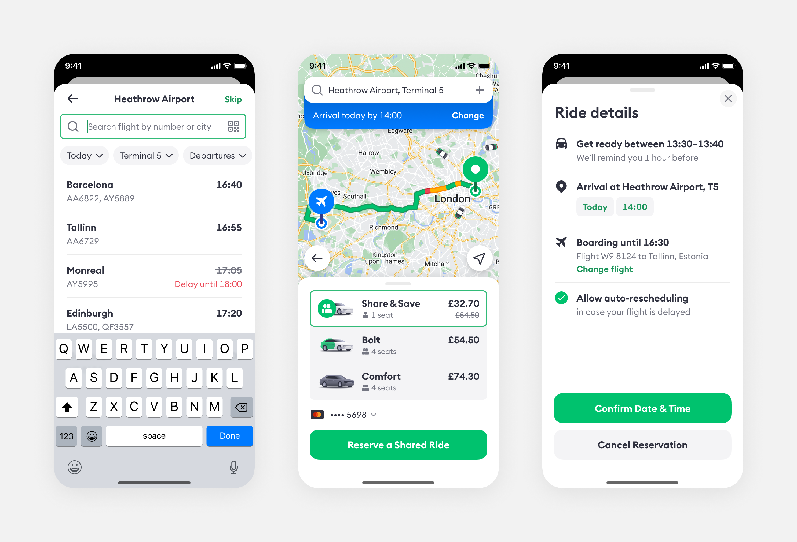
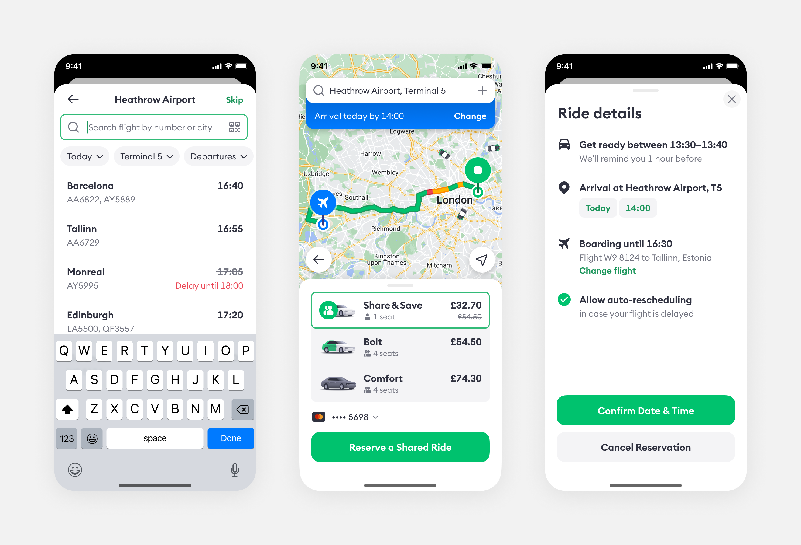

Share & Save
ride-hailing service improvements for the airport travellers ⟶ jump to solution
Business opportunity
According to data from the Transport Security Administration, passenger throughput at U.S. airports keeps climbing steadily and has almost achieved pre-pandemic levels in April 2022. Airports Council International Europe has revealed that passenger numbers at airports across the continent jumped 247% year-on-year in Q1 2022, which is an additional 660 million passengers.
At the same time, Bolt ride-hailing GMV from airports is about 3%, while at other competitors rides make up to 10% of total revenue and 13% of gross bookings. Additionally, up to 8% of trips come from train stations and other types of transportation hubs alone. Our goal is to improve the airport rider experience to help bridge the current difference in revenue.

Average daily number of travelers passing through TSA checkpoints at U.S. airports as a share of 2019 traffic. Source: U.S. Transport Security Administration


Usually, there are several options for getting from the city to the airport or in the opposite direction. In order of average price, the most popular are:
- Friend’s car, if you have one
- Complimentary hotel shuttle, where available
- Public transport, such as a bus, minibus, subway, or train
- Car-sharing service
- Ride-hailing service, such as Bolt, Uber, Lyft, Grab, and more:
- Ride-sharing (not supported in Bolt in 2022)
- Ride-on-demand
- Pre-booked ride (not supported in Bolt in 2022)
- Local taxicab
- Long-term car rental
- Private car service for premium users

Comparison of public and private transport pricing from Heathrow to the centre of London, 2022.
Travelling by taxi or minicab was the most popular mode of transport for arriving at Heathrow. This number has been gradually increasing over 2 decades and reached 32% by 2019.

Comparison of transport modes people used to get to Heathrow, 2002 vs 2019. Source: Statista


Challenge
My assignment was to design an experience integrated into Bolt app that would help deliver passengers to or from the airport in the most effective way. In other words, how to reduce the average price without compromising the user experience? There were two main directions to be considered, both of them had some downsides though.

1. Ride-sharing mode: 2–3 riders share a significant part of their route
- 👍 Up to 40% off
- 👍 On-demand stops
- 👍 Flexible pick-up time
- 👍 Easier to integrate into the ride-hailing flow
- 👎 Hard to match riders in sparsely populated areas
- 👎 You never know who you are going to share your ride with
- 👎 Another rider might be late

2. Airport bus shuttle: 10–50 passengers per bus
- 👍 Much cheaper
- 👍 Additionally, standard taxi can be offered to deliver people to the bus stop
- 👎 Limited bus stop locations
- 👎 Luggage issues
- 👎 Fixed timetable
- 👎 Would be tricky to mix with taxi within a single flow
- 👎 Collaboration with bus companies may be required
As my task was to integrate the solution into the existing ride-hailing app, I decided to proceed with the ride-sharing feature. The shuttle requires quite a different user flow so I would rather design it as a separate domain.
User research
I interviewed the most frequent airport visitors who travelled at least 4 times a year before the pandemic. The purpose of the study was to understand how they preferred to get to the airport and why they chose this or that option.
Most people change or combine their mobility choices based on multiple factors such as price, distance, trip purpose, time limits, traffic and weather conditions, co-riders, amount of luggage, the rider’s emotional and physical condition. When intending to order a taxi, people consider price, ETA (estimated time of arrival), and time to reach destination, always assessed in relation to what they’re being proposed by competitor apps. Here are some findings and ideas grouped by types of riders:

In fact, about a half of all travellers share their ride to or from the airport with someone else, mostly friends, relatives or business partners. Perhaps the most interesting question is what can make people take a ride with a stranger.
- Splitting the bill is obviously the most popular reason of ride-sharing.
- The desire to save money is not directly related to the level of income. Some people find bargain-hunting really fun.
- Some people get bored with travelling alone.
- Shared business trips are very important for networking.
- Unlike public transport, a taxi car is treated as a personal area. Thus, ride-sharing feature may face social and cultural barriers as well as privacy and safety issues.
- Riders feel safer if the driver’s identity is verified and represented in the app.
- While some respondents are wary of ride-sharing with strangers, they don’t mind interacting with them at the airport, especially foreigners.
- Some people use dating apps to find travel contacts, including drivers.
I decided to focus on individual tourists who are certainly the largest audience and who are most likely to find the ride-sharing mode relevant.
User journey
There might be plenty of issues during a taxi ride, especially if you are going to the airport. Let’s put them into the context to better understand how we might solve the most critical ones and avoid user’s uncertainty, frustration, last-minute rush and stress.

- Increased demand can significantly affect the price and ETA.
- Duration of the ride depends on traffic and other factors.
- The flight might be delayed or cancelled.
- A familiar ride-hailing service may be unavailable in the city of arrival.
- Limited internet connection and other technical issues after the arrival.
- It’s hard to find the pick-up location or a particular car among many other vehicles of the same taxi-fleet.
- Airports regulate where taxi may pick up, drop off, or wait for passengers.
- In case of ride-sharing, co-riders may carry too much luggage, be late or simply annoying.
- If the driver speaks a different language, communication and navigation issues are expected.
User stories
Based on previous research discoveries, I defined basic user stories to help formulate how the proposed features will provide value to the riders.
- As a rider, I want to be able to choose who to share my ride with so that we can split the price.
- As a rider, I want to get to the airport on time so I neither miss my flight nor have to wait too long.
- As a rider, I want to schedule my trip from the airport so I don’t have to worry about it after landing.
- As a rider, I want to quickly find a verified driver so that I can feel safe in an unknown area.
Prioritization
Next, we tried to estimate the effort required to implement features that are currently missing in the app and that can significantly improve the user experience.

Impact/Effort matrix to assess the feasibility of ideas.
Solution
The prototype of a proposed solution consists of several features and user flows that support and supplement each another. However, they are supposed to be divided into separate projects implemented and tested one by one:
- Flexible ride scheduling with flight status updates
- Ride-sharing with co-riders who have matched each other
- Custom pick-up directions
- Splitting the bill with friends

1. Ride scheduling
Unlike the majority of competitors, we don’t ask you to input the pick-up time. While scheduling a ride, people are more concerned about when exactly they will get to the airport. So, we calculate the optimal pick-up time based on the route distance, expected traffic, surge, weather conditions and airport congestion. Moreover, the drop-off ETA can be rescheduled automatically if the flight is delayed.
 

The ride scheduling can also help solve another business problem: our customers may be unaware that Bolt operates in 50+ countries outside of their immediate market. So, we should remind this in advance when the rider is approaching the airport, and suggest them to pre-book another ride from the airport to their final destination. If the rider has input their flight details in advance, the flow can be even smoother as we already know their landing location and time.
2. Ride-sharing
The scheduled ride price is higher because we have to guarantee the driver will arrive on time regardless of demand. However, we can try to match several co-riders heading the same direction to make the service more affordable.

My proposal suggests allowing ride-sharing passengers to preview and select their co-riders by inviting or accepting invitations from each other, or opting to pay the standard fare to travel alone. If no co-rider is selected or invited, the system will automatically match remaining pairs of passengers before the driver starts moving towards the first one.
This logic aims to address the problem of anxiety felt by passengers when sharing a ride with strangers by giving them more control over who they travel with.

3. Pick-up directions
Another problem is that people who order a taxi from the airport tend to have difficulties while looking for their driver in the crowded airport parking zone. Sometimes it’s not even clear how to get out of the airport.
In MVP, we reduced confusion and delays by means of step-by-step instructions explaining how to get from the arrival area to the taxi pick-up location.
In the next iterations, it would make sense to support AR navigation as a more visual, immersive and interactive way to guide people. The implementation may be quite challenging though due to unstable GPS data inside large buildings, which can disrupt the reliability of the feature.
To address this issue, it may be necessary to use additional sensors or technologies, such as Bluetooth beacons or Wi-Fi triangulation, to supplement the GPS data and provide a more accurate location signal.
4. Splitting the bill
People often share trips with friends, so they don’t need the app to find fellow travellers in this case. However, they still want an easy and convenient way to split their bill.
The proposed feature not only allows the rider to split the fare equally between their friends, but is also an excellent way to acquire new users who haven’t signed up for Bolt yet.
The impact
After a year of testing, the redesign of the Bolt Rider app on iOS and Android has had a positive impact on the rider experience and a range of key product metrics. GMV coming from airports increased by 2.5 times and reached 8%. However, the proposed features have been only partially implemented so there are still much more to do.
82% of users who tried sharing their rides with strangers, appreciated the opportunity to choose a co-rider after previewing their profile. About a half of the fellow travellers were successfully matched with each other, while a third was automatically matched by the system. Only 5% of riders cancelled their order — this is not higher than the average cancellation rate of standard ride types. In general, the ride-sharing experience has proven its efficiency for the airport trips. So it would make sense to support other transportation hubs and densely populated areas.

The success of the ride scheduling feature is largely dependent on the reliability of the service and the accuracy of ETA. While this feature has only contributed to 2% of GMV, there is still significant room for improvement in order to increase its effectiveness.
The number of successful scheduled rides increased by 12% after we allowed people to input the desired time of arrival at their destination rather than the pick-up time. However, the idea of searching by flight number didn’t pay off because most users preferred to enter their drop-off time manually.
Pick-up directions have significantly improved the pick-up experience at the airports and increased the number of finished orders by 3%. The error distance between requested pickup location and actual pickup location decreased by 28%. Driver wait-time decreased by 25%, which led to a 5% drop in the cancellation rate.
The bill splitting has been successful in acquiring new users, with a twice lower churn rate among those acquired through this feature compared to other marketing channels.
For confidentiality reasons I have omitted the actual values for metrics mentioned above.